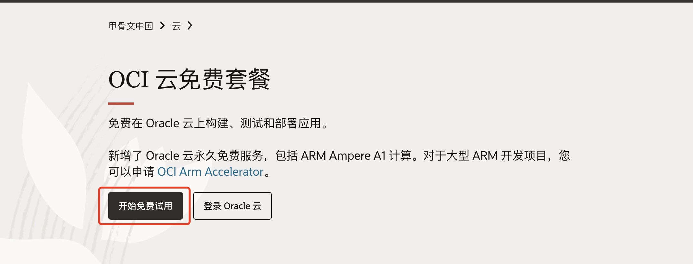
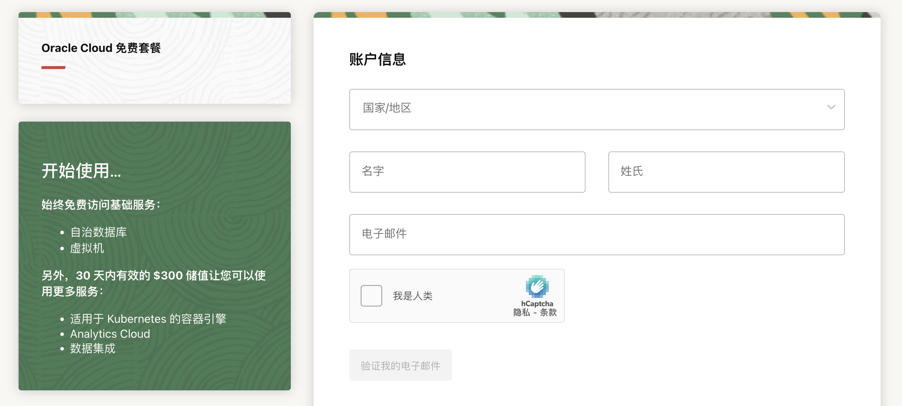
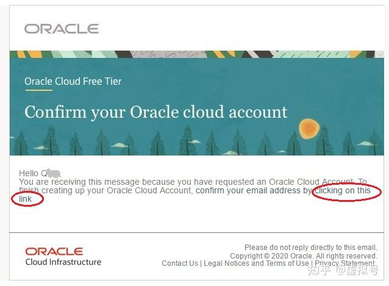
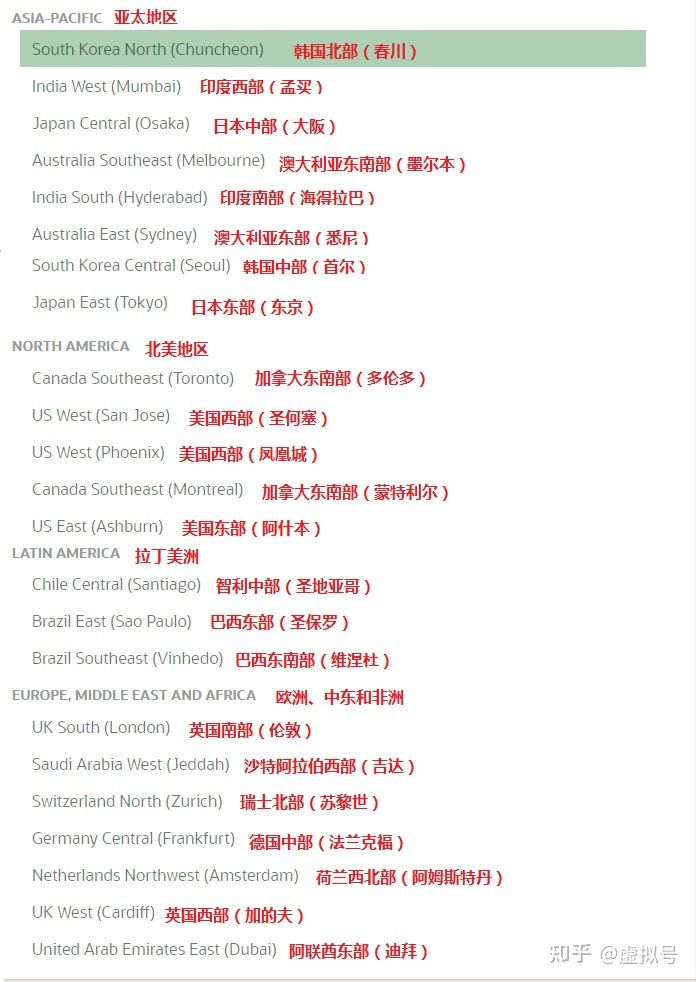
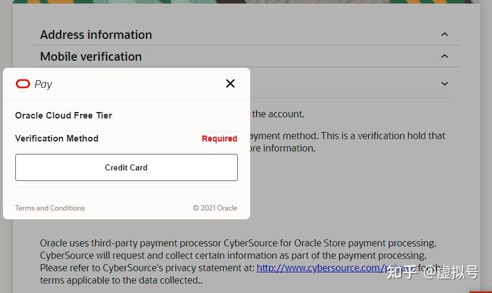
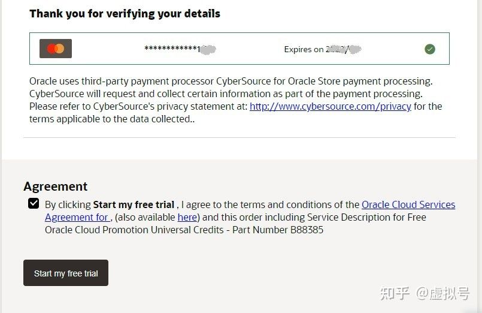
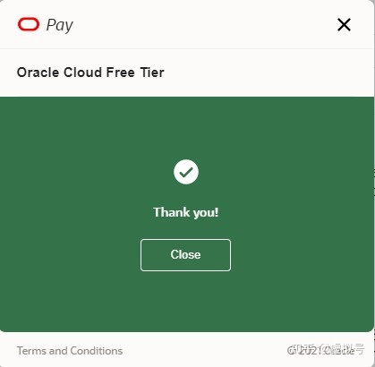

申请步骤
- 打开 甲骨文官网,点击开始免费试用

- 这里填写账户信息，注意国家请和信用卡发卡国家保持一致， 名字用汉语拼音即可，填写完成后，点击“验证我的电子邮件即可”

-
在上一步填写的邮箱中会收到一封注册邮件，点击验证链接

-
按要求输入密码(同时包含大小写字母和数字、字符，不得包含用户名称),选择甲骨文云帐号归属机房区域。
(选择归属区域时一定要事先确定好那个国家，注册成功后，以后所有的IP都是在该区且不可更改区域。)
请保存（Cloud Account Name到本地，后面需要提供给我进行后续操作）

推荐选择日本和韩国，离中国近，也可以按需选择，如果没什么特殊要求，选日本东部。

-
用英文填写地址,建议填写信用卡的账单地址，否则注册有可能失败，请如实填写,通过率高
-
验证手机号，如果是绑中国信用卡，建议使用中国手机号码验证。请如实填写,通过率高
-
最关键的步骤:验证信用卡 如果这里无法加载出来，请挂魔法上网的通道，刷新一下,如果没有相关手段请联系我

-
点击 start my free trail

-
看到这张图，表示成功，信用卡会被扣除1到2块钱，后面会退回来，这是为了验证信用卡的有效性，注意有的银行风控发现境外扣款可能会打电话确认，确认即可

申请结束
请提供邮箱和Cloud Account Name和密码给我进行后续操作